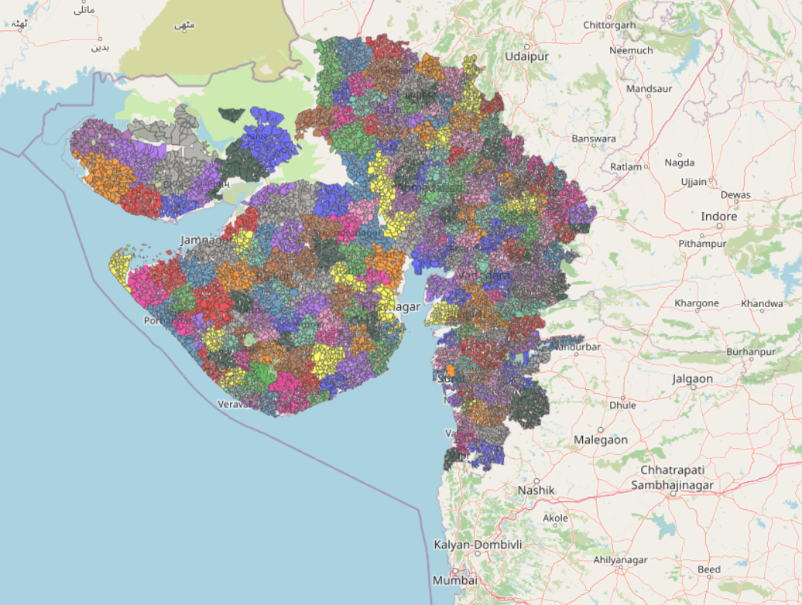
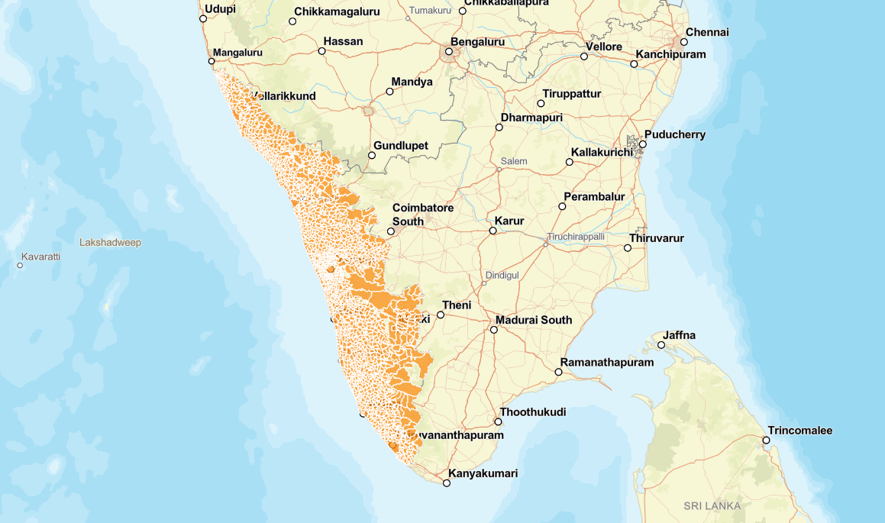
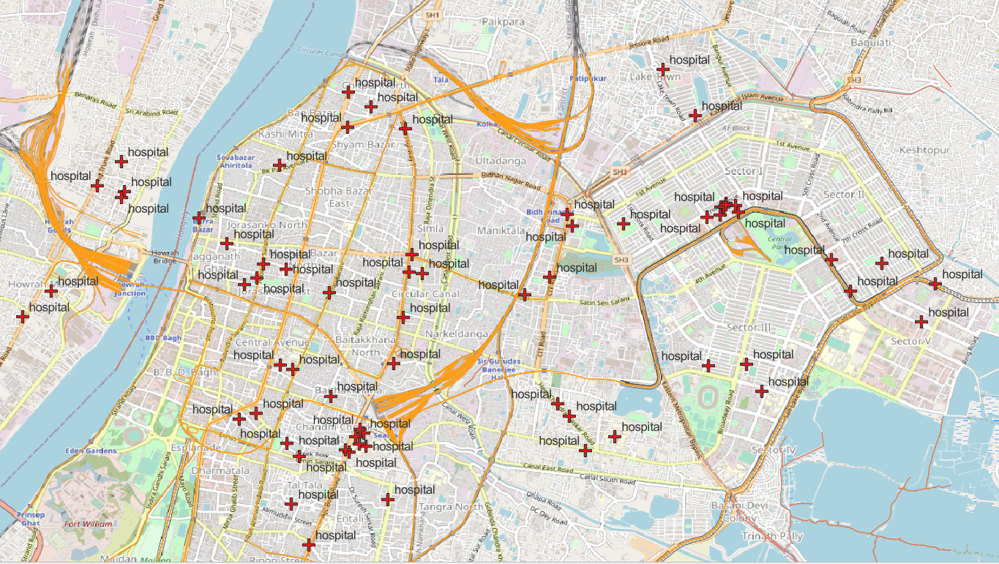
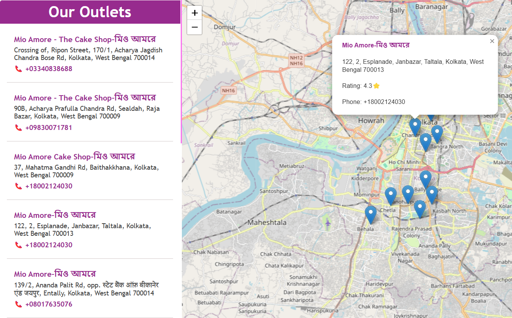
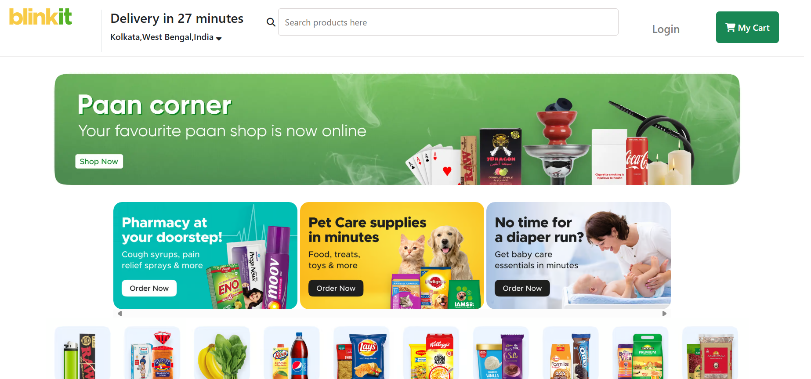
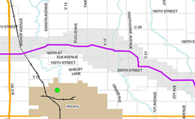
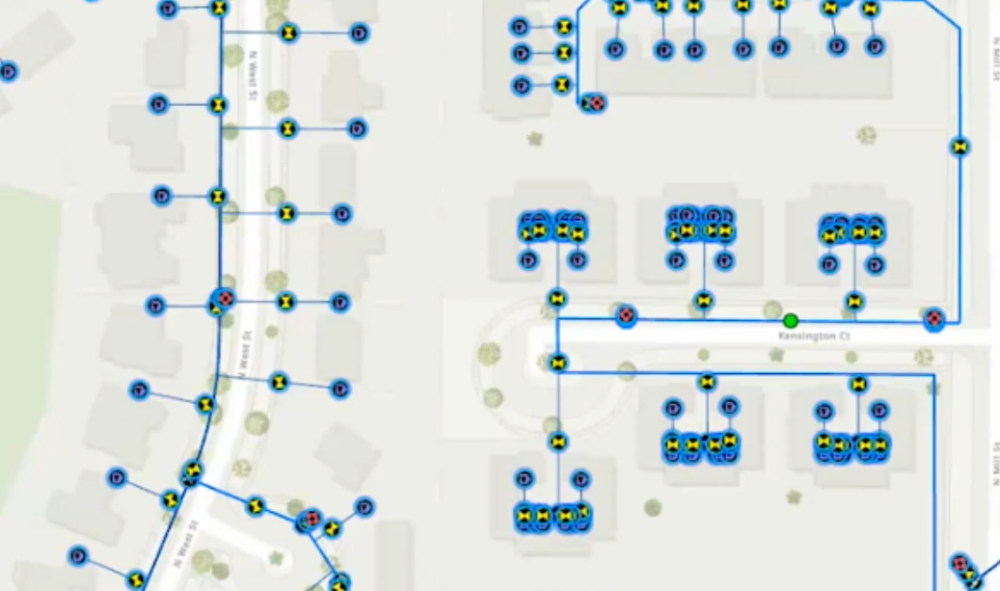
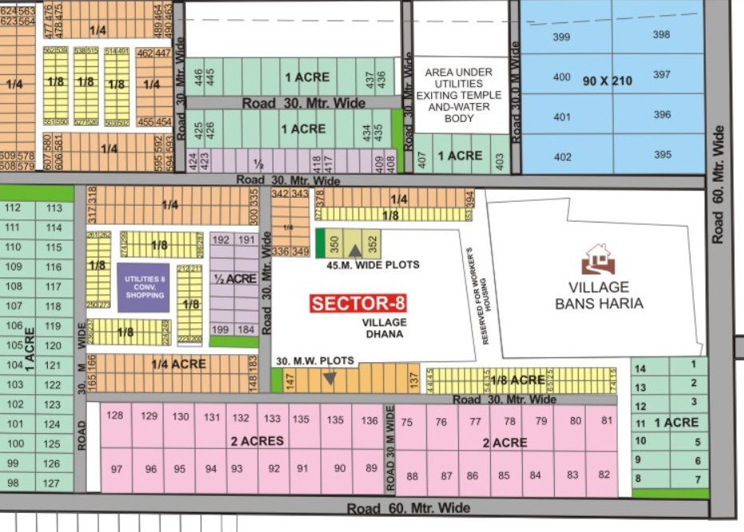
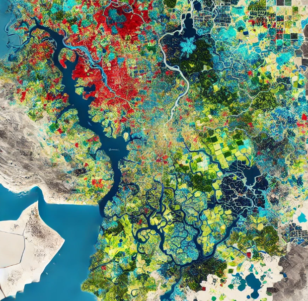
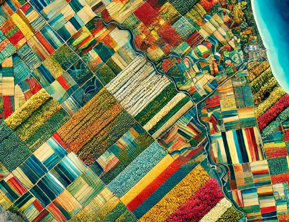

WEB GISLeaflet.jsGeoJSONJavaScript
Gujarat Village Boundary Explorer
Interactive village-level boundary visualization built with Leaflet.js, designed for exploring administrative polygons directly in the browser.
View Live ProjectGIS Engineer & Web GIS Developer
Building interactive maps, spatial data solutions and modern web applications.
I am a GIS Engineer focused on spatial analysis, remote sensing and web mapping. I enjoy turning geographic datasets into clear, interactive products that help people understand places and make better decisions.
My portfolio combines traditional GIS and remote sensing workflows with JavaScript, Leaflet, ArcGIS Maps SDK for JavaScript, Python, GeoPandas and PostgreSQL/PostGIS.
My goal is to bridge GIS expertise with modern web development and build production-ready geospatial applications.
Projects that best demonstrate my transition from GIS analysis to interactive Web GIS development.

WEB GISInteractive village-level boundary visualization built with Leaflet.js, designed for exploring administrative polygons directly in the browser.
View Live Project
WEB GISInteractive Kerala village boundary map demonstrating polygon rendering, web map navigation and spatial data visualization.
View Live Project
GISGIS-based accessibility and network analysis work supporting high-speed rail corridor research and regional connectivity assessment.
View GIS ProjectsHands-on projects using web technologies to turn maps and data into interactive experiences.
Interactive village boundary map with browser-based navigation and polygon visualization.
Village-level administrative boundary visualization using interactive web mapping.

LIVE
LIVE
GISPipeline network mapping and utility infrastructure analysis using ArcGIS and AutoCAD workflows.

GISNetwork coverage and service-area mapping for broadband infrastructure using ArcGIS Pro.

URBAN GISGIS-supported urban development and planning workflows for infrastructure and governance.
 REMOTE SENSING
REMOTE SENSINGSatellite imagery analysis, land-use classification and change detection using remote sensing workflows.

REMOTE SENSINGLand Use Land Cover classification using Sentinel-2 imagery, accuracy assessment and GIS map composition.

AGRICULTUREMulti-temporal satellite analysis, vegetation indices and classification for agricultural mapping.
Open to GIS, Web GIS, geospatial data and development opportunities.